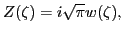

Next: Bibliography Up: Notes on Landau damping Previous: Two-stream instability
-- -- -- -- As is given in the wikipedia, the ponderomotive force is a nonlinear force that a charged particle experiences in an inhomogeneous oscillating electromagnetic field. The ponderomotive force is expressed by
| (94) |
 |
(95) |
|  | (96) |
| (97) |
| (98) |
yj 2016-01-26